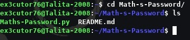

Math's-Passwords
Math's-passwords é um gerenciador de senhas que sim eu admito que o código em python não é meu
mas sim uma cópia um pouco melhorada que admito pedir ajuda algumas vezes para entender o que eu
estava fazendo e sim a ferramenta é feita em python, admito ter feito ela por curiosidade e aprendizado
já que não faz mal experimentar coisas novas não é? E sim infelizmente ela só funciona via terminal
então... Relaxa pessoal do windows, ainda terá alguma atualização para windows, só que vocês irão ter que
usar pelo menos no cmd ou powershell, mas ficam calmos, com o tempo pode surgir formas que tenham interface
gráfica, por mais que seja difícil.
Como que o Math's-Passwords funciona:
No caso ele gera uma senha aleatória com números, letras maiúsculas e minúsculas e caracteres especiais
sendo eles: #*&
Como instalar e usar o Math's-Passwords:
Primeiro passo: Clone o repositório: git clone https://github.com/Ex3cutor76-V1/Math-s-Password.git

Segundo passo: Entre no repositório: cd Math-s-Password/

Agora para usar é só usar o comando: python3 Maths-Password.py e irá aparecer algo assim:

E pronto você tem agora uma senha forte.